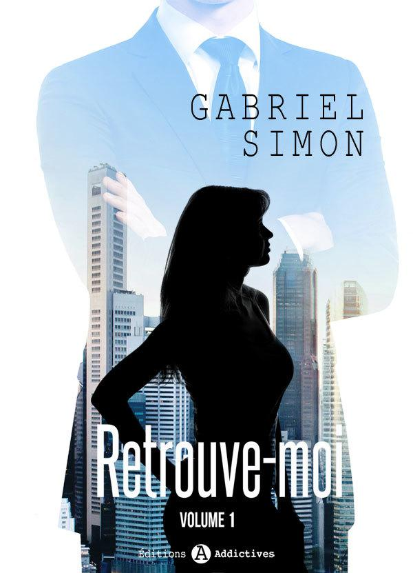
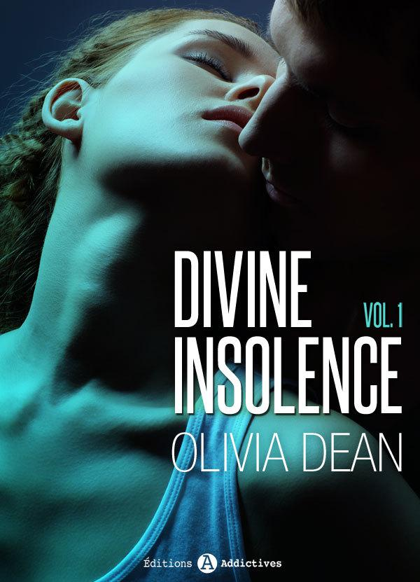
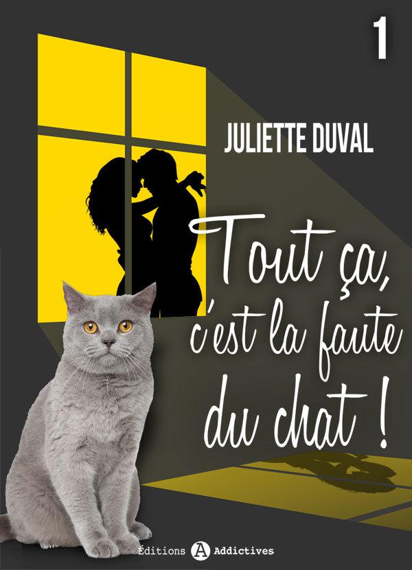

Rejoignez les Editions Addictives sur les réseaux sociaux et tenez-vous au courant des sorties et des dernières nouveautés !
Facebook : cliquez-ici
Twitter : @ed_addictives
Egalement disponible :
Sexy comédie - Recherche fausse fiancée, 1
Quand Ivy Clemens, jeune comédienne de stand-up, indépendante et sûre d’elle, répond à l’annonce n° 345856, elle n’imagine pas qu’elle s’apprête à jouer le rôle de sa vie… Et quel rôle ! Engagée par Simon Stone pour incarner sa fiancée lors d’une fête de famille, Ivy doit renoncer à ce qu’elle est. D’artiste fauchée, elle devient la riche héritière d’une famille de diamantaires.
La jeune femme se lance avec curiosité dans ce défi pour le moins surprenant et terriblement attractif. Mais perdue entre fiction et réalité, elle sera bien vite déstabilisée par un partenaire aussi troublant qu’énigmatique.
Tapotez pour voir un extrait gratuit.
Egalement disponible :
Retrouve-moi
Emily Green, jeune créative dans la publicité, découvre par hasard une porte qu’elle n’avait jamais vue auparavant dans le building de sa société. Poussée par une curiosité dévorante, elle ouvre cette porte et se retrouve alors dans une étrange entreprise où les employés tapent sur des machines à écrire et fument dans les bureaux ! Mais plus étrange encore, la jeune femme rencontre un homme intriguant et plein de charme qui lui fait une proposition inattendue.
Emily sait bien qu’elle devrait refuser mais poussée par un étrange désir, elle signe le contrat les liant désormais l’un à l’autre… au-delà du temps.
Choix du cœur ou pire erreur de sa vie ?
Tapotez pour voir un extrait gratuit.

Egalement disponible :
Insupportable... mais à tomber !
Nora n’a que 24 ans mais ses grands-parents lui ont déjà confié la responsabilité de leur hôtel new-yorkais. À la tête d’un établissement aussi prestigieux que délabré, elle se bat entre les clients capricieux et les factures à payer. Rien de bien excitant jusqu’au jour où elle rencontre Neil Caine, LE designer que tout le monde s’arrache pour sa créativité… mais dont tout le monde redoute les frasques !
Leur relation sera pleine de surprises, de passion... et de tensions en tous genres.
Tapotez pour voir un extrait gratuit.

Egalement disponible :
Divine insolence
La journée avait pourtant bien commencé !
Romane, jeune assistante d’édition, a réussi à obtenir un rendez-vous avec une personnalité incontournable.
Mais très vite rien ne va plus : au bout d’une heure d’entretien, elle réalise que « la personnalité incontournable » l’a confondue avec quelqu’un d’autre, et quand elle s’enfuit, morte de honte, elle se retrouve coincée, seule, dans l’ascenseur. Ne lui reste plus qu’à respirer profondément en attendant qu’un héros super-sexy la délivre.
Là, elle rêve, les mecs, ça fait longtemps qu’elle a fait une croix dessus…
Et pourtant…
Tapotez pour voir un extrait gratuit.

Egalement disponible :
Addictive Love
Entre Tom Kelley, le quarterback des Giants, et Maya Leblanc, la jeune photographe, rien n’aurait dû arriver ! Tom vit dans un monde fait de victoires et de paillettes, de dollars et de bimbos. Maya, elle, essaie tant bien que mal de boucler ses fins de mois.
Alors quand Tom essaie de la séduire, l’instinct de Maya lui dit de fuir… Ne risque-t-elle pas de se brûler les ailes à côtoyer ce monde si différent du sien ? D’autant que cet univers aux apparences superficielles dans lequel vit Tom est moins innocent qu’il n’y paraît…
Tapotez pour voir un extrait gratuit.
SÉDUCTION & TENTATION :
NORAH ET LUCILLA
Volume 2
1. Blind test
Je pousse un cri. Quelqu’un s’est glissé derrière moi et me bande les yeux avec un foulard. Mon corps tout entier frémit. Je reconnais ce parfum et ce souffle au creux de mon cou.
– C’était donc toi ?
Sans me répondre, la voix de Lucilla glisse sur ma peau comme un baiser :
– Tu m’as fait attendre. Tu vas devoir payer ton dû, dit-elle dans un sourire.
Elle me maintient quelques secondes les poignets derrière le dos, de manière à me soumettre. Je reste immobile, les yeux bandés, attendant qu’elle me dirige. Mon sang tambourine contre mes tempes. La surprise laisse place au ravissement.
***
Il était 20 h 12 quand je suis arrivée au Bristol. Mon cœur battait à tout rompre. J’ai hésité des heures avant de me rendre à ce rendez-vous mystère, et en me pointant devant la façade étincelante du palace, je me demandais encore ce que je faisais là.
C’est beaucoup trop chic, ils ne vont jamais me laisser entrer !
Mais le portier s’est incliné avec politesse sur mon passage. À l’intérieur, lustres, dorures et marbre blanc s’étendaient à perte de vue. Timidement, je me suis dirigée vers la réception.
– Bonjour. On m’a donné rendez-vous, mais j’ai un peu de retard…
– Votre nom, s’il vous plaît ?
– Brunel.
L’homme a pianoté rapidement sur son ordinateur.
– Vous êtes attendue dans l'une de nos suites, Mademoiselle.
– Si vous voulez bien me suivre, m’a invitée un jeune homme en uniforme.
J’ai suivi le garçon d’étage à travers l’hôtel, abasourdie par la beauté des tapisseries et des meubles.
Qu’est-ce que je fais là ? Il s’agit d’une erreur, ce n’est pas possible ! Qui peut bien m’attendre ici ? Ça n’a aucun sens !
Jamais de ma vie je n’étais entrée dans une suite. Quand le garçon m’a ouvert la porte, je suis restée sans voix. Tout était immense, somptueux, baigné de lumière. Les fenêtres du petit salon donnaient sur un jardin fleuri taillé à la mode de Versailles.
On se croirait dans un vrai château !
Le garçon d’étage s’est retiré discrètement.
Lucilla relâche la pression de son étreinte. Je sens ses doigts défaire avec habileté ma veste et mon chemisier. Mon sac tombe à terre, ma jupe glisse le long de mes jambes. Lucilla me fait reculer de quelques pas et m’allonge sur un fauteuil. Elle défait mes chaussures une à une. Je suis étendue en sous-vêtements et ne peux rien voir sous le foulard de soie. Le jeu m’effraie autant qu’il m’excite. À cette seconde, je lui appartiens. Elle peut faire tout ce qu’elle veut de moi.
Quelques instants, elle s’écarte de moi. Mon corps est sur le qui-vive. J’ai la respiration lourde, je suis entièrement soumise au regard de Lucilla.
Tout à coup, je sens sa peau me recouvrir. La peau de son ventre, de ses cuisses, de ses seins si doux qui m’électrisent. J’imagine ses formes que je n’ai jamais vues au grand jour.
Elle me caresse de tout son corps nu. Ses doigts dénouent mon soutien-gorge, ses dents m’arrachent ma culotte, puis sa langue remonte lentement à l’intérieur de mes cuisses. Elle va et vient avec gourmandise sur mes lèvres gonflées, humides d’excitation, tout en durcissant mes tétons du bout des doigts. Puis elle remonte et m’embrasse la bouche férocement, avec sur la langue le goût sucré de mon sexe.
Son bassin frotte le mien pendant que sa main me caresse. Je ne tiens déjà plus. Plongée dans le noir, mes sensations sont décuplées et tout mon corps est en éveil, comme si elle me touchait partout à la fois. Ses doigts me parcourent, glissent à l’entrée de mon sexe, me chatouillent. Je les voudrais en moi ! Viens, transperce-moi ! Mes cuisses sont trempées de désir.
– Tu as envie de moi ? susurre-t-elle en me mordillant l’oreille.
– Oh oui ! imploré-je.
– Dis-le.
– J’ai envie de toi.
Sa main enserre mon cou avec douceur. Je halète, prête à fondre.
– J’ai envie de toi. Prends-moi, s’il te plaît. Prends-moi !
À peine ai-je prononcé ces mots que ses doigts me pénètrent et me prennent tout entière. Je hurle de plaisir. Elle me maintient une jambe en l’air, et, de l’autre, bouge en moi jusqu’à l’orgasme.
Mon corps se détend sous les spasmes de jouissance. Mais Lucilla ne me lâche pas. Au contraire, elle me retourne contre le fauteuil, puis s’allonge sur moi, tandis que ses doigts mouillés remontent le long de mon dos.
– Je n’en ai pas encore fini avec toi, me chuchote-t-elle avec complicité, en passant la main dans mes cheveux.
Elle arrache le foulard de mes yeux et me maintient le visage contre le coussin d’une caresse de la nuque. Je laisse les frissons de plaisir me parcourir. Les cheveux de Lucilla ondulent sur ma peau pendant qu’elle m’embrasse les reins.
Mon dieu, ce n’est pas possible, c’est trop bon !!!
Sous ses lèvres et ses dents, j’abandonne toute pudeur. Brusquement, le foulard de soie claque sur mon dos. Claque sur mes fesses. Deux fois. Je gémis.
Oh ! Lucilla, Lucilla… Je suis à toi…
Alors, elle m’écarte les cuisses et plonge sa bouche en moi. Sa langue me pénètre par petites vagues violentes et rapides, tandis que ses doigts jouent avec mon clitoris gorgé de désir. Je mords le tissu sous moi pour ne pas rugir. Le plaisir me terrasse, montant avec plus de force et de rapidité encore que la première fois. Je jouis, au bord des larmes, les paupières closes, en perdant pendant quelques secondes conscience de tout.
***
Une fois que nous nous sommes glissées entre les draps soyeux du grand lit, je reste de longues minutes lovées au creux de Lucilla. C’est la première fois qu’elle est nue devant moi. Sa peau est magnifique, satinée et illuminée d’un hâle parfaitement uniforme, perlé par endroits de grains de beauté. La position de nos corps, emboîtés l’un dans l’autre, ne me permet pas d’admirer ses seins, ni son sexe que je sens peser contre mon dos. Après ce qu’elle vient de me faire vivre, je suis sans force, trempée et étourdie de volupté. Mais incroyablement bien.
Je voudrais rester comme ça toute ma vie !
– Tu peux rester dormir, cette nuit ? me demande-t-elle tout à coup.
Comment hésiter une seconde ?!
Je réponds avec un sourire comblé :
– Oui. Bien sûr, oui.
– Tant mieux, laisse-t-elle échapper entre ses lèvres, presque imperceptiblement, en me serrant contre elle.
Une telle tendresse me surprend. Je n’ai jamais osé espérer recevoir de vraie marque d’affection de sa part. Maintenant, je suis au paradis. Nos parfums flottent dans la suite, mêlés, sauvages. Contre moi, le souffle de Lucilla s’apaise.
– Lucilla ?
– Mmmh ?
– J’ai rompu avec Rémi.
Je ne sais pas quelle réponse j’attendais d’elle. Sans un mot, elle m’embrasse lentement le haut de la nuque.
– Et comment vas-tu ? finit-elle par demander.
– Ça va.
C’est en le disant que je réalise à quel point cela est vrai. J’ai mis un terme à ce que je croyais être le seul ciment de ma vie d’adulte, et ça va. Épuisée et sereine, je sombre aussitôt dans le sommeil.
***
Lorsque la sonnerie du téléphone me réveille, la lumière a envahi la chambre. Je suis seule.
– Bonjour Mademoiselle. Il est 7 h 30. Nous espérons que vous avez passé une bonne nuit et vous souhaitons une belle journée, grésille la voix du réceptionniste dans le combiné.
Je me jette dans l’autre pièce à la recherche de Lucilla. Aucune trace d’elle ; mais au cœur du salon, je découvre un petit déjeuner royal, avec café, chocolat, jus d’orange frais et viennoiseries à profusion. Au milieu, une note :
« J’ai dû partir tôt pour un rdv. J’ai demandé à la réception de te réveiller. Bon petit déjeuner.
Je porte à mon cou ton souvenir exquis.
L. »
Encore grisée par ma nuit, j’ai du mal à réaliser que je prends mon petit déjeuner dans un palace, avant d’aller comme tous les jours au travail. J’avale un croissant, plonge dans la baignoire gigantesque en regrettant amèrement de ne pouvoir en profiter plus longuement et file au journal.
La journée passe à la vitesse de l’éclair, comme dans un rêve. Impossible de me concentrer. Je ne fais que ressasser les scènes torrides de la veille et les mots griffonnés ce matin par Lucilla.
En rentrant au studio, Rémi est là, assis sur le canapé, la tête entre ses mains. Je suis malgré tout soulagée de le retrouver. Nous ne nous sommes pas vus depuis notre rupture.
– Je t’attendais… Tu étais passée où ?
Je le jauge un instant du regard.
– Ça ne te regarde plus.
– C’est vrai, acquiesce-t-il d’une voix conciliante. Pardon. Je voulais dire…
Il se tord les doigts en parlant, l’air profondément abattu, comme s’il essayait de trouver à tout prix les mots justes.
– Je ne fais que repenser en boucle à notre conversation. Écoute, ce n’est pas possible… On ne peut pas…
– Rémi, je ne souhaite vraiment pas revenir là-dessus. Ma décision est prise.
– Oui, d’accord, ce n’est pas ce que je voulais dire. Pour le logement… Tu comptes déménager ?
Sa question me déstabilise. Je savais qu’il faudrait aborder le sujet un jour, mais jusqu’à présent, j’ai tout fait pour ne pas y penser.
– Je… je n’y ai pas encore réfléchi. Mais si tu veux que je parte… Clémentine pourra sans doute me dépanner.
– Norah ! Quoi que tu aies fait… rien ne presse. On a pris cet appartement ensemble. On peut bien s’arranger, je ne sais pas, trouver le moyen de partager ces murs le temps de voir venir…
Je reste interloquée.
À quoi joue-t-il ? Pourquoi est-il si gentil alors que j’ai tout foutu en l’air entre nous ?!
Mal à l’aise, j’acquiesce.
– Je te remercie… J’avoue que ça me dépannerait. Je n’ai nulle part où aller.
– On fait comme ça, alors. Je dormirai par terre sur le matelas ce soir. J’achèterai un deuxième clic-clac demain.
Je baisse les yeux, embarrassée.
– OK… Merci.
Je bredouille et me laisse tomber sur le canapé, étourdie par le soudain revirement de Rémi.
Pourvu que cette colocation improvisée ne soit pas une mauvaise idée…
Je suis trop épuisée pour réfléchir. Je décide de faire confiance à ce revers du destin.
2. Grand air et petits secrets
Pour m’aérer l’esprit et ne pas me retrouver coincée au studio avec Rémi, je décide de passer le week-end chez ma mère. Peut-être sera-t-il plus facile de discuter avec elle en face-à-face.
Malgré tous ces bouleversements, je n’arrive pas à oublier le visage de l’inconnu qui figure sur les photos de mon enfance. J’ai besoin d’apprendre la vérité sur mon passé. Ce sera l’occasion de m’éloigner un peu de Paris et de prendre des distances avec les complications de ma vie amoureuse…
Ma mère vient me chercher à la gare de Provins. Je suis toujours émue de remettre un pied dans la ville où j’ai grandi.
– Je suis heureuse de te voir, ma puce ! s’écrie ma mère en m’embrassant. Tu viens si rarement…
Bavarde comme une pie, elle se met immédiatement à me raconter les derniers cancans du village. Son flot de parole me fait sourire.
Au fond, elle m’a manqué. Si elle savait la vie que je mène à Paris !
Soudain, elle m’attrape le bras.
– Et Rémi, il n’a pas voulu venir avec toi ? Comment va-t-il ?
– Il va bien… Mais à ce propos, maman, il faut que je t’avoue quelque chose.
Ma voix flanche devant le sourire intrigué de ma mère. Elle s’attend visiblement à une bonne nouvelle Elle apprécie tellement Rémi que j’ai la hantise de lui annoncer notre séparation. J’ai peur de lui briser le cœur.
– C’est un peu délicat à annoncer comme ça… mais on a rompu.
– Quoi ? Vous… vous ne vivez plus ensemble ?
– Si, si, on partage toujours le studio, mais on n’est plus en couple.
– C’est absurde ! Qu’est-ce qui s’est passé ? Depuis le temps que vous vous aimez, c’est normal de traverser une petite crise… À votre âge en plus ! Mais c’est rien ma puce, vous allez la surmonter…
Une petite crise… tu parles ! Si elle savait que je couche avec une femme… !
Je m’efforce de la convaincre que notre rupture est définitive, tout en restant vague sur les motifs de cette décision. Ma mère semble dubitative ; toutefois, elle a assez de gentillesse pour faire mine de me comprendre.
– Tu as bien fait de venir ce week-end, remarque-t-elle avec douceur. Tu vas pouvoir rester tranquille et te reposer un peu.
La maison familiale me met dans un état étrange de mélancolie. Je me demande comment ma mère réussit à vivre seule dans ces grandes pièces, au milieu des souvenirs. À moins qu’elle ait un amant que j’ignore… Avec cette histoire de photos, je ne suis plus très sûre de bien la connaître.
Pour faire le vide, je me réfugie à l’ombre des rosiers, au fond du jardin que ma mère tient toujours soigné et lumineux. Je repense à cette semaine passée. Ma vie me paraît confuse.
Pourquoi tout est-il si compliqué ? Est-ce que c’est moi qui fais les mauvais choix ? Peut-être devrais-je quitter l’appartement. Ce serait la moindre des choses au lieu d’imposer à Rémi ma présence. Mais je ne sais pas si je suis prête à le chasser totalement de ma vie. En plus, Lucilla me manque atrocement. Je n’ai pas eu de ses nouvelles depuis notre nuit au palace. Rien que de me la remémorer, je tremble de désir. Je n’ai jamais connu ça avant. Son corps me manque tant !
Après plusieurs hésitations, je finis par lui écrire un bref texto :
« Je pense à toi. Je pense à ta peau. »
Mais les heures passent et mon téléphone reste muet. L’angoisse monte.
Et si elle me fuyait ? Après tout, elle n’a même pas daigné prendre le petit déjeuner avec moi ! Si ça se trouve, elle a couru rejoindre les bras de sa copine !
J’ai beau tenter de me rassurer comme je peux, je n’arrive pas à chasser ce doute de mon esprit. Les révélations de Marie résonnent dans ma tête.
***
Ma mère s’est mise en tête de me consoler de ma rupture et me materne comme si j’étais une blessée de guerre. Pour le dîner, elle me concocte des lasagnes au saumon, mon plat préféré. Je profite de ce climat de complicité mère-fille pour aborder le sujet des photos, mais ça ne manque pas : elle détourne aussitôt la conversation.
– Je ne sais plus quoi faire, confié-je le soir à Clémentine par téléphone. Elle ne me dira rien !
– Alors tu n’as plus le choix ! Tu dois trouver la vérité par toi-même.
– T’es drôle ! Qu’est-ce que je peux faire ? Je ne vais pas ouvrir une chasse à l’homme…
– Je sais bien, répond Clémentine en pouffant. Mais tu pourrais trouver d’autres photos, ou des lettres ou quelque chose… Profite d’être chez ta mère pour jeter un œil dans les placards !
– Oui, tu as sans doute raison. C’est juste… ça me rend dingue d’imaginer que ma mère me cache des choses qui me concernent. Je croyais qu’on se disait tout.
– Qu’est-ce que tu veux ? Bienvenue dans le monde adulte ! Et toi, tu lui as dit que tu batifolais avec une des femmes les plus riches de Paris ?
– Tu rigoles ! J’imagine la crise cardiaque…
– D’ailleurs, ça va avec Lucilla ?
– Oui… C’est compliqué en fait. C’est merveilleux quand je suis avec elle ! Mais elle ne m’a toujours pas parlé de sa copine et je ne sais pas du tout ce qu’elle attend de moi…
– Attends ! Tu ne lui as toujours pas demandé d’explications depuis que tu sais ?
– Ce n’est pas si facile… Déjà, je ne la vois pas souvent. Et quand c’est le cas, il faut dire que nous ne passons pas beaucoup de temps à discuter…
– … mais pas mal à profiter, me coupe Clémentine d’une voix badine. Petite dévergondée ! Je suis jalouse !! Mais bon, ce n’est pas une raison pour te faire avoir, il faut que tu saches si oui ou non elle a déjà quelqu’un. Elle est sincère avec toi, non ?
– Elle a l’air… quand elle le décide. J’ai du mal à la cerner. Je n’ai pas eu de ses nouvelles depuis quatre jours et elle ne répond même pas à mes messages.
– Tu veux que j’aille lui casser la figure ?
J’éclate de rire. Les sarcasmes de Clémentine ont fini par me dérider. Au fond, je sais que les conseils de mon amie sont les bons.
Il faut simplement que j’arrête un peu de gémir sur mon sort et que je prenne les choses en main !
Le soir même, j’attends que ma mère soit endormie pour monter en douce au grenier. Toutes mes affaires de petite fille sont entassées dans de grandes malles à l’abri du temps. J’essaye de me replonger parmi jouets et cahiers sans me laisser atteindre par la nostalgie. Mais j’ai beau fouiller méticuleusement, je ne réussis pas à trouver un seul indice me menant sur la trace de l’homme aux moustaches.
C’est alors qu’en poussant mes recherches dans un petit guéridon au cœur de la pénombre, mes mains tombent sur un vieux carnet d’adresses vraisemblablement hors d’usage. À l’intérieur, les noms me sont pour la plupart étrangers ; un ou deux me sont bien familiers, mais c’est surtout celui d’une femme qui retient mon attention. « Diane S. » Je connaissais une Diane avant. Il y a longtemps. C’était une tante que j’aimais beaucoup. Ses vêtements sentaient le patchouli. Maintenant que j’y pense, j’ignore comment nous l’avons perdue de vue. Se pourrait-il qu’elle sache quelque chose sur mon passé ? Toute excitée par cette découverte, je range le carnet dans ma poche et regagne ma chambre avec fébrilité.
Je touche peut-être enfin au but !
***
Le lendemain, je choisis de ne rien révéler à ma mère. Nous passons la journée à parler de choses sans importance, et pour me faire plaisir, nous allons même faire un brin de shopping dans le centre-ville. Je vois bien que ma mère s’inquiète pour moi, en dépit de sa mine enjouée. Elle ne peut s’empêcher de me glisser, à la fin de la journée :
– J’espère que Rémi et toi résoudrez vos problèmes rapidement. Vous allez si bien ensemble ! Et au moins, je sais qu’il prend soin de ma fille.
Non mais en quoi ça la regarde ?! Je déteste quand elle se mêle de mes affaires !
Malgré tout, je prends sur moi pour ne pas déclencher une guerre nucléaire.
– Ne t’inquiète pas, maman, dis-je dans un sourire forcé.
– Moi qui pensais déjà à ta robe de mariée !
Mon sourire se transforme en rictus.
Ma robe de mariée ! Je rêve !!
Cette conversation me paraît surréaliste. Il me semble que je n’ai jamais été plus loin du mariage…
Au moment de partir, je découvre sur mon téléphone un nouveau message que je n’avais pas remarqué de la journée.
Lucilla !!
Mon cœur s’emballe.
« J’embrasse du bout des doigts chaque grain de ta peau. »
Ce message m’envahit aussitôt de bonheur, dissipant mes doutes pour un petit moment, et me fait quitter Provins sereine.
Dans le train pour Paris, je reçois un message de Rémi.
« Tu rentres bien dîner ce soir ? J’ai une petite surprise… »
Qu’est-ce que ça peut bien être ?
Intriguée et nerveuse, je plonge dans un demi-sommeil où s’emmêlent sans queue ni tête les angoisses de ma mère, Lucilla, Rémi, une immense pièce montée… et une femme en robe noire prénommée Diane.
***
Quand j’arrive sur le pas de ma porte, c’est une irrésistible odeur de curry qui m’accueille.
– Curry de crevettes sur lit de coco ! s’exclame Rémi dès que je franchis le seuil.
Derrière lui, la table est dressée en grande pompe : nappe blanche, roses rouges et bougies. Je suis complètement prise au dépourvu.
– Mais qu’est-ce que c’est ?!
– Eh bien… notre dîner !
– Mais pourquoi avoir préparé tout ça ?
– Norah… me dit-il en s’approchant tout près de moi. Ne t’inquiète pas. Je voulais juste que nous partagions un moment à nous. Rien qu’un moment, sans arrière-pensée. Je n’attends pas plus… On peut quand même se faire plaisir en dînant ensemble, non ?
L’insistance de Rémi me déstabilise.
Évidemment, s’il s’agit juste d’un dîner… pourquoi je refuserais ? Il a préparé tout ça pour moi, et je ne me vois pas le décevoir… En plus, je meurs de faim !
– OK, finis-je par lâcher. On vit ensemble de toute façon, je ne vois pas où est le mal.
Le plat est un délice. Nous discutons avec Rémi de sa préparation aux concours, de ma mère, de tout et de rien, naturellement et chaleureusement, tels deux bons amis qui se retrouvent. Contrairement à ce que je craignais, il ne me pose aucune question déplacée.
C’est étrange, cette entente entre nous. Comment peut-il faire comme s’il ne s’était rien passé alors que je l’ai trompé ? La maturité de Rémi m’a toujours bluffée. À sa place, je crois que je l’aurais déjà foutu à la porte ! Je ne mérite pas sa bonté…
Mon cœur se pince. Est-ce le dîner, les paroles de ma mère ? Toujours est-il que je me laisse envahir par la nostalgie.
Rémi m’a rendue heureuse. Il continue à être près de moi alors que je l’ai trahi. Il me connaît. En le quittant, j’ai brisé la seule personne qui m’aimait vraiment… Lucilla, elle, ne sera jamais avec moi. Nous ne sommes pas du même monde ! Et puis je ne vais pas faire ma vie avec une femme…
L’esprit embrumé par les doutes et par le vin blanc du dîner, j’accepte de m’allonger aux côtés de Rémi et m’endors immédiatement dans ses bras, comme une enfant.
3. Au bonheur des dames
Au journal, je continue à travailler d’arrache-pied, encouragée par les compliments bienveillants de Lucilla. Depuis que j’ai prouvé ce que je valais, Marie me considère comme une de ses rédactrices à part entière… et qui plus est, une amie digne de confiance.
– Tu avances dans tes projets de carrière ? me demande-t-elle au cours d’un déjeuner.
– Pas vraiment, dis-je en faisant la grimace. Fashionable me convainc de continuer dans le milieu journalistique, mais je ne sais pas encore très bien où chercher.
– Tu es douée. C’est vrai que les places ici sont comptées, mais tu devrais trouver à te caser sans trop de problèmes.
– C’est gentil… On verra bien… Il me reste un mois de stage, j’essayerai ensuite de postuler quelque part.
– Et ça va avec ton copain ?
– Oui, oui, réponds-je avec automatisme.
J’aurais aimé me confier à Marie. Elle aurait su m’écouter et me conseiller, d’autant qu’elle connaît Lucilla depuis plus longtemps que moi… Mais impossible de lui dire que j’ai une aventure avec sa patronne !
– Et toi, comment vas-tu ? Tu tiens le coup avec Cerise ?
Marie baisse les yeux et reste un instant silencieuse, jouant avec ses makis du bout de ses baguettes.
– En fait, j’ai honte de l’avouer… mais j’ai craqué. Je sais que ce que je fais à Nathan est dégueulasse. Pourtant je n’ai pas réussi à tenir. J’ai fait une déclaration à Cerise par mail.
– Ah ! Et elle t’a répondu ?
– Oui ! Justement. C’est ça qui est fou ! Je pensais qu’elle ne voudrait plus me parler de sa vie après ça.
– Mais attends, qu’est-ce que tu lui as écrit exactement ?
Marie rosit derrière sa frange blonde.
– Je ne suis pas fière, tu sais. C’est parce que je n’arrivais plus à tenir. Elle m’obsédait. Jour et nuit, je ne pensais qu’à elle et à cette situation impossible. Je me suis dit qu’il fallait dénouer l’histoire, tu vois, l’étouffer dans l’œuf. C’est grosso modo ce que je lui ai écrit. Qu’elle occupait toutes mes pensées, mais que je renonçais à elle à l’instant même où je lui écrivais. Et au final, figure-toi que c’est tout le contraire qui s’est produit…
– Quoi ? Elle n’a pas été choquée ? Alors que tu es la meilleure amie de son mari ?!
– Je sais, c’est fou. Mais elle aussi a senti qu’il se passait quelque chose d’incroyable entre nous ; malgré Nathan, malgré sa vie d’épouse, et malgré son hétérosexualité. Une sorte de déclic. Je suis la première femme qu’elle regarde. On ne va rien faire, évidemment. Mais on ressent la même chose ! C’est tellement dingue !
– Vous n’allez pas vous revoir ?
– Pas toutes seules, c’est trop dangereux. Qu’est-ce qu’on peut faire ?! Je ne vais pas briser son couple… Il est hors de question que je devienne ce genre de femmes… On se contente de correspondre par mail.
– Vous avez une liaison platonique, quoi ! dis-je pour la taquiner.
– Oui, bon…
Je souris, bien que je trouve l’histoire de Marie dangereuse. Difficile de croire que personne ne finira par être blessé ! Mais ce n’est pas moi qui vais lui jeter la pierre. Depuis mon histoire avec Lucilla, je suis assez mal placée pour juger qui que ce soit ! J’espère juste que tout le monde réussira à en sortir indemne, et que Marie ne souffrira pas trop…
***
La semaine s’écoule sans que je revoie Lucilla. Elle joue les abonnées absentes au journal. Sans elle, les jours me paraissent longs. Un soir, alors que je reste tard pour finir une mise en page, je ne peux pas résister à la tentation de lui envoyer un mail.
« Les couloirs sont vides sans toi. »
Sa réponse s’affiche presque instantanément à l’écran :
« Suis à Milan pour 3 jours. Ton goût ne quitte pas ma langue. Envie de toi. »
Son message me fait fondre. Je reste quelques secondes indécise, sans savoir quoi répondre, quand je reçois un second mail :
« Envie de tes doigts. »
Une douce torpeur engourdit mon corps. J’imagine Lucilla, lascive, allongée sous moi. Gagnée par le désir, je réponds :
« Je voudrais venir en toi et te sentir contre mes reins. »
« Si tu aimes les balades en mer, accorde-moi ton samedi. Je me ferai pardonner mon absence. »
Incapable de lui résister, je réponds sur-le-champ :
« OK, dis-moi l’heure, je te rejoindrai où tu veux. »
***
Je n’ai pas dormi avec Rémi depuis la dernière fois. Nous faisons comme s’il ne s’était rien passé, mais cette soirée a semé le trouble dans mon esprit.
Pourquoi est-ce que tout est toujours aussi simple et sûr et avec lui ? Sa présence rassurante me manque…
J’aimerais pouvoir lui confier ma découverte à Provins. Je sais qu’il me rassurerait et qu’il me soutiendrait pour que j’appelle Diane. Seule, je n’arrive pas à prendre mon courage à deux mains.
Pourtant, dans l’ensemble, cette première semaine de colocation s’est mieux passée que je ne pouvais l’espérer. Je m’efforce de vivre les choses telles qu’elles se présentent, sans trop réfléchir ; malgré tout je me sens parfois coupable de profiter de la situation.
***
Samedi, à 11h, le taxi de Lucilla est devant ma porte. Je reconnais le conducteur qui nous avait emmenées au Lutetia pour notre premier rendez-vous.
– Bonjour Colin.
– Bonjour Mademoiselle. Vous allez bien ?
– Oui, très bien, merci. Mais j’ignore où nous allons.
– Ne vous en faites pas, j’ai reçu toutes les indications. Je crois qu’il s’agit d’une surprise, dit-il en me lançant un clin d’œil à travers le rétroviseur.
Où m’emmène-t-il ?
Nous sortons de Paris et je commence à trépigner de curiosité.
Je m’en veux d’avoir douté de Lucilla. Je ne peux pas exiger d’une femme si importante d’être tout le temps à ma disposition ! Il faut que j’arrête d’être aussi égoïste. Dire que j’ai dormi dans les bras de mon ex ! Ce n’est franchement pas mieux !
Après une bonne demi-heure de route, nous nous arrêtons enfin au bord de l’eau. Je n’ai absolument aucune idée de l’endroit où nous nous trouvons.
– Bienvenue à destination, me lance Colin avant de venir m’ouvrir la portière.
Lucilla est là, splendide, dans une robe portefeuille semi-transparente, nouée à la taille par une grosse ceinture. À travers sa robe je peux voir se dessiner la rondeur de ses seins.
– Merci Colin, dit-elle. C’est bon pour 18 heures ?
Puis elle m’embrasse langoureusement dans le cou et me saisit la main pour m’entraîner un peu plus loin.
– Nous sommes sur les bords de Marne, m’explique-t-elle. Je voudrais te montrer une de mes maisons secondaires…
Je reste d’abord interloquée, avant d’apercevoir derrière elle, flottant dans l’eau, un yacht somptueux.
Ce n’est pas possible ! Un yacht ? On se croirait dans un film !
Je reste sans voix.
– Viens !
Elle me fait monter à bord sans lâcher ma main. Sur le pont, un jacuzzi chauffe au soleil, tandis qu’à l’intérieur trône un petit salon luxueux, tout de bois laqué, équipé de sofas, table et minibar.
C’est trop beau pour être vrai !
Je n’ai pas le temps de me remettre de mon admiration que Lucilla m’appelle depuis le jacuzzi.
– Alors, tu viens l’essayer ?
– Mais… je n’ai pas de maillot.
– Pas besoin. Personne ne passe jamais par ici.
Sur ces mots, elle tire sur le nœud de sa ceinture et fait tomber la robe à ses pieds. Elle ne porte aucun sous-vêtement. Sa beauté est à couper le souffle. Fine, les seins ronds, les hanches parfaitement dessinées et les jambes élancées, elle ferait pâlir n’importe qui.
Elle entre dans l’eau frétillante et d’un signe m’invite à la rejoindre. Je l’imite aussitôt. Nous nous détendons parmi les bulles, les épaules chauffées par le soleil. Alors Lucilla plaque son corps brûlant contre le mien. Nous nous embrassons longtemps, les lèvres avides. J’avance des mains d’abord timides vers sa poitrine, mais au contact de ses formes, mes doigts prennent vite de l’assurance. La pointe de ses seins durcit sous mes caresses, et comme pour m’encourager à continuer, Lucilla jette la tête en arrière dans un gémissement.
Bon sang, qu’elle est belle !
L’excitation monte en moi.
De plus en plus entreprenante, je fais descendre mes paumes sur son ventre lisse, contourne son nombril du bout des doigts, puis les os légèrement saillants de ses hanches. Son sexe est épilé avec soin et ma main curieuse suit le liseré brun qui la conduit en profondeur. Les lèvres de Lucilla sont douces à en mourir. Je les écarte et caresse son sexe tout doucement, éveillant son plaisir en même temps que le mien. Mon doigt va et vient par petits cercles, prêt à entrer en elle.
Brusquement, Lucilla se met à trembler : je la sens céder sous le plaisir. Ses mains se crispent sur mes hanches et, avec fermeté, elle me fait asseoir sur le rebord intérieur du jacuzzi. C’est alors que je comprends son intention. Sous moi, un des jets souffle entre mes cuisses.
Mon dieu !
Je rugis. Tandis que les bulles excitent mes sens, Lucilla se plaque contre moi et frotte nos deux sexes l’un contre l’autre, ses ongles plantés dans mon dos.
Je vais m’évanouir de plaisir ! Je ne savais pas que deux femmes pouvaient faire l’amour comme ça !
Notre étreinte devient sauvage. Nous haletons toutes les deux, sur le point de jouir. Je jette mes jambes autour de sa taille.
– Oh oui !!! finis-je par exulter.
Lucilla éclate alors de rire et me serre dans ses bras, le temps que mon cœur se calme.
***
– Ça te dit, un petit tour ? me demande-t-elle une fois que nous avons retrouvé nos esprits.
– Tu sais le conduire ?
– Oui, évidemment ! Où est l’intérêt sinon ? J’ai le permis plaisance. Tu peux dénouer la corde, s’il te plaît ?
Je m’exécute avec admiration.
Quel spectacle que Lucilla à la barre, sa robe nouée à la va-vite baillant sur sa poitrine nue ! Décidément, elle me surprendra toujours !
Alors que le yacht se détache tranquillement du bord pour descendre la Marne, nous prenons le temps de discuter :
– Tu penses déménager ? me demande-t-elle.
– Euh, non, enfin pas tout de suite. C’est impossible niveau budget… Est-ce que ça t’embête ?
– Moi ?! Ça ne me regarde pas. Je pensais qu’il pouvait être délicat de vivre au quotidien avec son ex-copain, c’est tout. Mais je comprends très bien. Dis-moi si tu as besoin d’aide.
– Ça va pour l’instant, merci. Je reste peu au studio en fait, c’est surtout pour dormir. Je suis allée à Provins voir ma mère ce week-end.
– Ton père n’habite pas avec elle ?
– Il est mort il y a quinze ans.
Elle lève brutalement la tête vers moi.
– Je suis désolée, Norah.
– Ce n’est rien !
Je suis touchée par l’attention de Lucilla. Elle semble sincère avec moi. J’aimerais profiter de ce moment de complicité pour lui demander si elle a déjà quelqu’un, mais je renonce, de peur de briser la magie de l’instant. Et puis, je ne veux surtout pas qu’elle me trouve possessive.
– Et toi, ta famille ?
– Ils sont en Italie mais nous avons perdu le contact il y a longtemps… dit-elle, les yeux dans le vide.
Mince, aurais-je touché un sujet sensible ?
Je n’ose pas en demander davantage. La vie de Lucilla me paraît de jour en jour plus complexe et mystérieuse.
***
Après avoir amarré, elle m’entraîne dans la cabine du yacht.
– Déshabille-toi, m’ordonne-t-elle doucement en s’asseyant sur le lit.
Sans me faire prier, j’ôte une deuxième fois mon short et mon t-shirt. Ses yeux brillent dans la pénombre et me fixent de haut en bas, comme prêts à me dévorer. Je la rejoins avec fébrilité.
Je saisis ses lèvres entre mes dents, et nous nous embrassons à pleine bouche pendant que je dénoue sa ceinture à peine fermée. Sa robe glisse. Elle me plaque alors en travers du lit, sans cesser de m’embrasser ; sa bouche, d’abord à l’envers au-dessus de la mienne, avance ensuite le long de mon cou puis entre mes deux seins, pour me lécher fougueusement les tétons. Mon corps se tend déjà de plaisir.
Glissant un peu plus sur moi, Lucilla me présente alors ses seins superbes. Je jubile. Je n’ai jamais autant désiré quelqu’un. Je m’empare immédiatement de leurs pointes brunes, les pinçant, les suçant, les savourant des dents et du bout de la langue. Sur moi, Lucilla frémit. Prise de spasmes, elle m’écarte les cuisses et avance encore, plongeant sa langue en moi et présentant son sexe à ma bouche. Ses premiers mouvements me submergent d’émotion.
Que c’est bon !
Ma langue, toujours plus avide, sillonne aussitôt ses lèvres mouillées. Je suis éperdue de volupté, à la découverte de son goût profond et enivrant. Le plaisir de Lucilla coule sur ma langue. Par petits coups, je pénètre en elle tout en agrippant ses fesses galbées. Entre mes cuisses, ses mouvements s’intensifient, me suçant, me lapant, me pénétrant. Pitié, encore ! Encore ! Mon corps électrisé perd la notion du temps et de l'espace. Lucilla et moi gémissons ensemble tandis que nos sexes vont et viennent sur la langue de l’autre. Et nous finissons par jouir simultanément sous les cris de plaisir.
Waouh, c’est la première fois que je ressens quelque chose d’aussi intense !
4. Jeux de mains…
Marie me regarde avec fermeté, mâchoires serrées comme pour réfréner sa fureur.
– Tu étais chargée de vérifier les infos de la bio. Je t’ai fait confiance… Résultat : J. P. Gaultier refuse la parution et on doit envoyer 150 000 exemplaires au pilon !
Je suis écarlate de honte. Je voudrais disparaître.
– Je… Je suis désolée.
– Norah, tu sais ce que je pense de ton travail. Je suis contente de toi en général, mais cette bourde nous coûte une fortune.
– Qu’est-ce que je peux faire ?
– Rien. Attendre que ça se tasse. J’aurais dû vérifier derrière toi, je suis moi aussi responsable.
– Et Lucilla va le savoir ?
– Ça va être difficile de lui cacher ça !
Je rentre chez moi désespérée.
Comment est-ce que j’ai pu laisser passer cette coquille ? Je suis nulle ! Lucilla va m’en vouloir à mort !
Rémi remarque tout de suite que je suis à cran.
– Qu’est-ce qui t’arrive ?
Je maugrée, de mauvaise volonté :
– Rien… Une tuile au boulot.
– Tu ne veux pas qu’on aille dîner au japonais du coin ? Ça nous changera les idées et tu me raconteras ce qui se passe.
– Je te jure, je n’ai pas envie d’en parler !
– OK, alors on parlera d’autre chose. Allez, viens. Ça nous aérera.
Je me laisse entraîner, trop soucieuse pour résister. Une boule d’angoisse m’empêche de respirer quand je pense à la réaction de Lucilla… Plus jamais elle ne voudra me voir !
Rémi est sérieux lui aussi. Nous parlons peu, l’un et l’autre absorbé par nos pensées.
– Écoute, se lance-t-il. Je t’aime toujours. Je voudrais qu’on réessaye.
– Quoi ?!!
Je ne m’attendais pas à cette déclaration. Je suis muette de stupéfaction.
– Toi et moi. On mérite une autre chance, Norah.
– Je t’ai trompé, Rémi.
– Je sais, et cette idée me ronge. Mais tu as fait une erreur, ça arrive à tout le monde. Nous pouvons surmonter ça. Il faut se battre pour qu’un couple fonctionne, pas renoncer dès qu’un obstacle se présente. J’ai beaucoup réfléchi et…
– Arrête, m’écrié-je en bondissant hors de ma chaise. Je suis désolée. Je déménagerai s’il le faut. Mais je ne peux pas te donner ce que tu attends de moi. Je suis perdue dans ma vie affective. J’ai besoin de temps… de me retrouver. Seule.
Tu ne comprends rien de rien ! Personne ne comprend rien !! Je ne sais même pas si je suis hétéro ou complètement gay !!
Hors de moi, je m’échappe pour me promener un peu dans la tiédeur d’un soir d’été. Les rues de Paris sont encore animées, et je tente de semer dans le brouhaha lointain toutes mes amertumes de la journée. Tétanisée par le remords, je craque et finis par envoyer un texto à Lucilla :
« Tu me manques. »
« Voyons-nous demain soir. Je suis invitée à une soirée, tu m'accompagnes ? », me répond-elle aussitôt.
Alors elle ne m’en veut pas !
Soulagée, hébétée de fatigue, je rentre chez moi. Rémi, allongé sur son clic-clac à même le sol, feint déjà de dormir. Ne pas avoir à lui parler me soulage.
Je voudrais tant ne pas le faire souffrir… Avec un peu de chance, il m’aura pardonné demain.
Je me couche à mon tour et m’endors illico.
***
Je retrouve Lucilla à l’entrée d’un loft magnifique en bord de Seine, dont la vue domine Paris. Ses boucles relevées par une pince en or, la robe admirablement fendue jusqu’au bas de ses reins, ma maîtresse est somptueuse. J’ai beau ne pas être jalouse, tous les regards qui se posent sur elle me donnent le vertige. Les invités sont tirés à quatre épingles. Je ne connais personne et cette foule huppée me met assez mal à l’aise. J’ai l’impression d’être une novice perdue au milieu du gratin. Après avoir discuté à droite et à gauche, Lucilla s’approche enfin de moi avec deux coupes de champagne.
– Nous trinquons à la nouvelle collection Cardin. Les journalistes sont rares. La pièce est surtout bourrée de stylistes et de mannequins.
– Tu es superbe, lui chuchoté-je à l’oreille.
– Et toi donc.
Son index caresse fugacement la pointe de mes seins et la ligne de ma hanche, puis pince par-dessus ma robe l’attache de mes bas. Je ferme les yeux quelques secondes, déjà toute émue par la chaleur de ses doigts.
– Alors, il paraît que tu as fait des tiennes au journal ?
Mon cœur trésaille.
Est-ce qu’elle va m’en vouloir pour ça ?
Mais son sourire me rassure tout de suite.
– Je me demande bien ce qui te distrait autant ces dernières semaines… me glisse-t-elle d’un air mutin.
Je lui rends son sourire.
– Attends-moi, je dois juste aller saluer une connaissance.
J’acquiesce et la regarde rejoindre un jeune homme en costume trois-pièces.
Comment oser lui reprocher de me laisser à l’écart ? C’est moi qui préfère rester discrète sur notre liaison, et elle ne peut décemment pas me présenter comme sa stagiaire de seconde main.
Pour autant, je me sens de moins en moins à ma place, seule au milieu de ces personnalités mondaines. Lucilla ne m’accorde plus un regard et va de l’un à l’autre en papillonnant, bavardant et riant comme si elle avait oublié ma présence. J’enchaîne les coupes de champagne pour ne pas jouer les potiches.
– Vous semblez perdue, me lance pourtant une voix derrière moi.
Je me retourne. Une très belle blonde d’une trentaine d’années me fait face en souriant.
– Pardonnez mon manque de courtoisie, vous donniez envie de vous secourir.
– Je ne suis pourtant pas en détresse…
Mais, l’alcool aidant, je me trahis moi-même en éclatant de rire.
– D’accord, je l’avoue !
– Laurence Green, me dit-elle simplement en me tendant la main. Enchantée de vous connaître.
Son visage m’est vaguement familier. J'ai l'impression de l'avoir déjà croisée quelque part… mais je dois me tromper, car son nom ne me dit rien.
– Norah Brunel. Le plaisir est pour moi.
– Vous êtes top model ?
Je rougis, intimidée par la flatterie.
– Non, pas du tout ! Je commence une carrière de journaliste dans la mode.
– C’est vrai ? Pardon, je ne voulais pas du tout vous mettre mal à l’aise. Je dois vous paraître grossière ! En fait, je suis photographe. Repérer des modèles est mon métier. Pour être tout à fait honnête, je vous ai abordée par déformation professionnelle. C’est la fraîcheur de votre visage qui m’a d’abord frappée.
Je suis embarrassée, sans trop savoir si je dois prendre ces compliments au sérieux.
Cette femme ne serait-elle pas en train de se moquer de moi ?
Furtivement, je jette des coups d’œil à la recherche de Lucilla et l’aperçois au centre d’une demi-douzaine de personnes, riant à gorge déployée. Piquée par la jalousie, je me retourne vers Laurence Green :
– Je vous remercie, c’est très gentil.
– Je vais être directe. Je n’aime pas tourner autour du pot lorsque je sais ce que je veux. Accepteriez-vous de poser pour moi ? J’imagine que ce n’est pas dans vos habitudes…
– Ce ne sont surtout pas dans mes qualifications !
– Ne jouez pas les modestes. Vous me feriez honneur. Je vous dirigerai.
La tête me tourne sous l’effet du champagne. Tout cela me paraît dingue.
– Et je ne vous devrai rien ?
– Non, bien sûr que non. Ce sera pour une série artistique. Je travaille actuellement sur les portraits et les bustes de jeunes femmes. Passez à mon studio demain, vers 18h, OK ? Je pars dans deux jours à Moscou. Tenez, je vous laisse ma carte. Contactez-moi.
– D’accord, dis-je sans être tout à fait convaincue.
– J’ai été ravie de faire votre connaissance, Norah, me glisse-t-elle à l’oreille en me serrant le poignet avec chaleur.
– Moi aussi.
À demi charmée, bien qu’un peu abasourdie, je la regarde s’éloigner de sa démarche élégante.
***
Dès la sortie du travail, le lendemain, je me rends à l’adresse indiquée sur la carte de Laurence Green. Je me suis décidée à tenter cette aventure. La veille au soir, Lucilla ne m’a pas adressé un regard et j’ai fini par rentrer seule, la mort dans l’âme. Je ne comprends pas pourquoi elle me propose de l’accompagner si c’est pour m’ignorer toute la soirée.
Aurait-elle honte de moi ? Elle n’est jamais là quand j’ai besoin d’elle. Entre Rémi qui fait tout pour m’éviter et l’ambiance glaciale au boulot, on ne peut pas franchement dire qu’elle me soutienne. Au moins, ce shooting photo me changera les idées et m’amusera un peu !
Laurence m’accueille dans son studio avec un thé glacé, puis me laisse entre les mains de son assistante maquilleuse. Quelques secondes, j’ai l’impression d’être dans la peau d’un top model.
Avant d’entrer en piste, elle me montre une série de clichés : des jeunes femmes à demi nues ondulent sous des clair-obscur éclatants avec beaucoup de sensualité et de poésie.
– C’est magnifique !
– Je suis heureuse que ça te plaise. J’aimerais que tu t’inspires de leurs poses. C’est vraiment le grain de peau que je voudrais travailler avec toi.
Elle m’invite aussitôt à prendre place au milieu des spots et plonge la pièce dans le noir. Sous l’objectif, je me laisse gagner par la panique.
Et si je n’étais pas à la hauteur ?!
Mais Laurence semble percevoir ma peur et m’aide à prendre confiance :
– Commence simplement par te tenir droite, face à moi, paumes ouvertes. Voilà, comme ça.
Elle déclenche l’appareil photo en continuant à me guider. J’essaye d’appliquer ses directives à la lettre.
– Tourne la tête. Regarde-moi. Super. Attends. Tu pourrais te mettre en sous-vêtement, pour que je puisse prendre ta silhouette ?
J’hésite quelques secondes, mais me raisonne vite.
Je ne vais pas faire ma vierge effarouchée maintenant !
J’enlève donc rapidement jean et chemise, puis me replace devant l’objectif.
– OK, tu peux lever les bras tout doucement ? Très bien. Et danser là entre les deux halos de lumière, à la Isadora Duncan ? Tu sais, avec des gestes amples ? Oui, encore ! Lâche-toi complètement. Ça va, tu n’as pas froid ?
– Non, non, ça va.
– Bon, si tu es d’accord, on va faire une dernière série. Tu veux bien enlever tes dessous ?
Quoi ? Je vais poser complètement nue ???
Je n’ose pas me récrier, mais mon cœur s’accélère. Je ne me suis pas du tout préparée à cette éventualité. Pourtant, comme hypnotisée par l’euphorie du moment, je m’exécute. Laurence continue de me photographier pendant que je me déshabille. Malgré ma nervosité, j’essaye de prendre un air décontracté.
– Tu es splendide… Maintenant, fais la même chose que tout à l’heure. Oui, comme ça. C’est parfait ! Encore… Attends, je vais te montrer.
Elle s’approche de moi. Devant cette proximité, ma nudité me paraît soudain très gênante. Laurence est à peine à quelques millimètres de moi. Le lin de son pantalon me frôle. Elle prend ma main droite pour la poser délicatement à l’intérieur de mes cuisses. Je me laisse faire comme une poupée. Elle prend ensuite ma main gauche et l’arc-boute afin de la placer sous mon sein. En me lâchant, ses doigts effleurent ma peau. Ses yeux me scrutent. Et sans crier gare, dans la continuité du geste, elle me caresse le téton entre son majeur et son index.
– Eh !
Je recule brutalement.
– Qu’est-ce que vous faites ?
Laurence, pourtant, ne perd pas contenance et me provoque en glissant ses doigts dans mes cheveux.
– Eh bien ? Allons, laisse-toi aller…
– Écoutez, je ne suis pas du tout venue pour ça ! Je me suis clairement trompée sur vos intentions. Désolée, dis-je tout en me dégageant.
Je récupère mes vêtements et file sur-le-champ, sans même écouter les vagues récriminations de la photographe.
Alors les femmes sont si peu différentes des hommes, finalement !
Déçue, humiliée, j'arrive chez moi et m’enfouis en boule sous la couette.
Ça m’apprendra à être aussi naïve !
5. Chute libre
Le lendemain, deux roses carmin m’attendent sur mon bureau, nouées par un foulard de soie que je reconnais tout de suite et qui porte encore le parfum de Lucilla. Je souris, conquise. Cette surprise me fait oublier aussitôt son comportement de l’autre soir.
Cependant, la semaine qui commence s’annonce difficile… Ce sont déjà mes derniers jours de stage et j’angoisse pour mon avenir. Je ne sais absolument pas quoi faire après Fashionable. Faut-il que je reste dans la mode ou au contraire que j’essaye d’autres domaines, histoire de me diversifier ? Je suis complètement perdue. D’autant qu’en arrêtant de travailler avec Lucilla, j’ignore ce qu’il adviendra de notre liaison. Et je ne compte pas sur ma mère pour me rassurer :
– Accepte tout ce qu’on te propose ! me conseille-t-elle par téléphone. Ne fais pas la fine bouche pour ton premier job, crois-moi. L’important pour l’instant, c’est d’acquérir de l’expérience. Et tu as un loyer à payer !
Merci maman…
Il n’y a que Clémentine pour me soutenir un peu.
– Arrête de t’en faire ! me dit-elle un soir. Je vais te traîner à mes cours de yoga si ça continue ! Tout finit toujours par arriver en son temps. Sois un peu confiante. C’est plutôt pour ta tante que tu devrais te bouger. Tu attends quoi ? Qu’elle ait une révélation et qu’elle vienne d’elle-même frapper à ta porte ?
Je souris. Le franc-parler de Clem’ est un don précieux qui m’a souvent sauvé la mise. Je décide de mettre son sermon à exécution le soir même, puisque Rémi dîne dehors avec des copains de fac et me laisse l’appartement pour moi toute seule.
Après avoir composé puis effacé le numéro de Diane une trentaine de fois, je me résous enfin à passer l’appel. Mon cœur bat la chamade.
– Allô ?
Elle a décroché !
J’essaye à toute vitesse de reconnaître la voix, mais mes souvenirs sont bien trop lointains. Elle pourrait être une parfaite étrangère. Sous le coup de l’émotion, mes mots s’emmêlent dans ma tête.
– Euh, bonjour… Diane ?
– Oui ?
– Excusez-moi de vous déranger. Je ne sais pas si vous vous souvenez de moi… Je suis Norah. Norah Brunel…
J’aurais espéré une réponse, mais elle reste muette. J’enchaîne :
– La fille de Louise. Voilà… Je me permets de vous appeler parce que… Je crois que vous étiez très proche de notre famille il y a quelques années. J’ai retrouvé des photos de quand j’étais petite… Je ne sais pas ce qui s’est passé. Enfin… J’aimerais vous revoir, si c’est possible. Ça me ferait très plaisir.
Je me tais brusquement. Après un blanc, mon interlocutrice se décide à parler.
– Norah ! Oui, bien sûr. Quelle surprise ! Comment vas-tu ? Tu dois être adulte maintenant.
– J’ai 21 ans.
– Déjà ! Grand dieu, tout va si vite… Et tu veux qu’on se rencontre ? Tu es à Paris ?
– Oui, j’y vis désormais, avec mon… avec un ami. J’essaye un peu de renouer avec mon passé en ce moment. Je serais vraiment très heureuse de vous voir.
– Bien… J’avoue que je suis encore sonnée par ton appel, on ne peut pas dire que je m’y attendais. Alors disons… dimanche, 16h devant le Sacré-Cœur, ça te va ?
– Oui, parfait. Merci beaucoup. À dimanche.
Je raccroche les mains moites.
Je n’en reviens pas que ça ait été si facile. Au fond, j’ai toujours cru que je tomberais sur quelqu’un d’autre, ou qu’elle ne me reconnaîtrait pas. Je vais peut-être finir par apprendre la vérité, après tout !
Boostée par cette perspective, je décide de profiter de l’absence de Rémi pour travailler un peu ; j’ai encore un article à peaufiner avant demain et je n’ai pas eu le temps de le finir au bureau. Tout à coup, je reçois une alerte mail. Les lignes qui s’affichent à l’écran me pétrifient :
« J’imagine que Laurence est la plus responsable des deux. Mais je ne tolère plus de trahison de personne.
Je te prie désormais de garder tes distances.
L. Conti »
En dessous est jointe une photo sur laquelle je me trouve nue, en pleine lumière. Pire encore, Laurence debout contre moi est en train de plonger sa main entre mes cuisses.
Au secours !!! Mais qu’est-ce que c’est ?!
Je mets quelques secondes à me rappeler ce qui s’est véritablement passé, lorsque Laurence est venue rectifier ma pose, juste avant que je la repousse.
C’est pas vrai ! J’ai été piégée ! Mais c’est monstrueux ! Comment peut-on faire une chose pareille ?! Et pourquoi ? Je ne l’ai même pas vue prendre de photos à ce moment-là. L’appareil devait être en automatique. Ça veut dire que tout était programmé !
Je relis le mail de Lucilla et m’effondre en larmes.
Qu’est-ce que je vais faire ? Évidemment qu’elle s’est sentie trahie. Elle ne me croira jamais si je lui raconte ma version des faits ! Et que veut-elle dire par « je ne tolère plus » ? Quelqu’un lui a-t-il déjà fait du mal ? Je ne comprends plus rien. Quel intérêt Laurence avait-elle à faire ça ? En plus, Lucilla en parle comme si elle la connaissait.
Je me sens complètement dépassée par ce coup bas. J’ai toujours été incapable de comprendre la cruauté.
Ça n’a aucun sens ! Qui pourrait me souhaiter du mal à ce point ?
Le nom de Rémi m’effleure une demi-seconde, mais je le chasse aussitôt : malgré toutes les raisons qu’il a de m’en vouloir, il ne s’abaisserait pas à de telles mesquineries. Alors qui ?
Je n’ose même pas rappeler Lucilla.
Qu’est-ce que je pourrais lui dire ?
Sous ma couette, je fais semblant de dormir lorsque Rémi rentre vers 1 heure ; mais je ne réussis pas à fermer l’œil, partagée entre la colère, le désespoir et la honte. Sans compter l’inquiétude que me procure désormais l’existence de toutes ces photos : qui sait où elles pourraient atterrir…
***
Pendant deux jours, je garde une mine épouvantable et les paupières gonflées. N’étant pas d’humeur à travailler, je suis maintenant impatiente que mon stage se termine. Lucilla n’est pas au bureau, et je ne sais pas comment je pourrais la convaincre de me pardonner.
– Tu viens boire un verre ? Je t’invite pour ta dernière semaine, me lance Marie à travers le couloir.
Je m’empresse d’acquiescer. Nous ne nous sommes pas vraiment parlé depuis l’incident avec J. P. Gaultier, et je craignais d'avoir perdu son affection.
– Bah alors ? C’est de finir ton stage qui te donne une tête pareille ? me taquine-t-elle tandis que nous trinquons.
– J’ai des petits soucis dans ma vie perso en ce moment, mais ce n’est rien, dis-je avec un sourire que j’espère rassurant.
Pourtant ça ne convainc pas Marie.
– Qu’est-ce qui se passe, Norah ?
– Eh bien… C’est une sombre histoire de famille. En tombant sur des photos il y a quelques semaines, j’ai plus ou moins déterré un vieux secret, et depuis je traque la vérité…
À défaut de pouvoir parler de Lucilla, je lui confie alors ma découverte de l’inconnu à moustaches et le mutisme acharné de ma mère.
– Mais c’est dingue cette histoire ! On se croirait dans un film !
– Oui, c’est vrai, conviens-je en riant. Mais, un film qui touche peut-être à sa fin, car j’espère tout savoir dimanche.
– Je te le souhaite, en tout cas.
– Et alors, ta fameuse relation platonique, ça tient toujours ?
– Oh !
Marie fait un geste vague de la main comme pour passer à autre chose.
– Quoi « oh » ?
– C’est le cas de le dire…
– Qu’est-ce que ça veut dire ?
– …
– Allez, raconte-moi ! Je suis en manque de potins !
– Bon, bon, bon… Tu l’auras voulu ! Mais ne râle pas quand je t’aurai raconté, OK ?
– Ouh, ça s’annonce croustillant !
– On a en quelque sorte concrétisé…
– Comment ça ? Tu as vu Cerise ?
– Non.
– Bah alors ?
– J’ai dit qu’on avait concrétisé « en quelque sorte ».
J’ouvre de grands yeux. Je ne comprends rien à ses sous-entendus.
– Mais vous l’avez fait ou pas ?
– Oui. Par mail.
– Par mail ? Oh… Et c’était comment ?
– C’était fantastique… Je deviens folle. On est allées trop loin pour s’arrêter, maintenant.
– Mais ce n’est pas frustrant de ne pas pouvoir vous toucher, vous sentir ?
– C’est différent. Je ne vais pas te mentir, je ne pourrai pas me passer de la présence de Cerise bien longtemps. Mais ça reste incroyable.
Malgré moi, j’imagine soudain Marie en train de se caresser devant son ordinateur. Pour chasser cette vision plus que troublante, je change brutalement de sujet.
– Et vous avez trouvé un nouveau stagiaire ?
– Pas encore. Ils sont en plein recrutement. Mais je vais te regretter, tu étais super efficace !
– Oui enfin sauf quand…
– Tout le monde fait des erreurs Norah. Crois-moi, j’ai déjà fait bien pire. Ça forme. Nous sommes tous très contents de ton travail. D’ailleurs c’est dommage que Lucilla soit à Berlin toute la semaine, elle aurait certainement aimé te dire au revoir.
J’essaye tant bien que mal de contenir mon émotion.
Alors elle est à Berlin ! Je n’en avais aucune idée… Est-ce qu’elle est partie à cause de ce qui s’est passé ?
– Espérons qu’elle va revenir en forme, continue Marie, lancée dans les confidences. Elle était assez dispersée ces derniers jours, et ne venait quasiment plus au bureau. Je crois que c’est depuis qu’elle a rompu avec sa copine, il y a quelques semaines. J’ai vu Laurence l’autre jour, elle aussi est assez mal en point !
Quoi ?!
J’ai l’impression que mon cœur s’arrête. En une fraction de seconde, tout se met en place dans ma tête.
Mais c’est pas vrai, qu’est-ce que j’ai pu être idiote ! Laurence était son ex-copine ! Elle s’est servie de moi pour se venger. Lucilla ne m’a jamais menti. Et maintenant j’ai tout fichu en l’air !
Je n’écoute plus Marie que d’une oreille distraite. J’ai une seule chose en tête : récupérer Lucilla.
Il faut qu’elle me pardonne. Je ne peux pas me passer d’elle !
En sortant du bar, je me dépêche de rentrer chez moi pour repenser à tout ça au calme et décider d’un plan d’action. Mais sur le chemin, un nouveau SMS vient semer le trouble dans mon esprit :
« Je ne suis pas celle que tu crois. Diane est morte. Je n’ai rien à t’apprendre. »
Je ne connais pas le numéro qui s’affiche, mais le devine aussitôt.
Morte ? Qu’est-ce que ça veut dire encore ? Pourquoi tous ces mystères ?!
Je ne comprends absolument rien, et le ton du message me fait froid dans le dos. On dirait presque une menace.
À qui ai-je bien pu parler si ce n’était pas Diane ?
Immédiatement, j’appelle l’expéditrice pour obtenir des explications, mais la messagerie se met en route avant même que ça sonne. Mes jambes me portent à peine. Je suis sur le point de craquer, à bout de nerfs. Ma vie m’échappe complètement.
Pourtant, le pire m’attend devant chez moi. À ma porte, sur le paillasson, je découvre mes valises et toutes mes affaires entassées, jetées plutôt, dans de grands sacs. Au milieu, une note griffonnée à la va-vite de la main de Rémi :
« La prochaine fois, ne laisse pas tes mails ouverts sur l’ordinateur. Tu t’es suffisamment fichue de moi. J’espère que ta boss te fait bien jouir. Sors de ma vie. »
À suivre,
ne manquez pas l’épisode suivant.
Egalement disponible :
Séduction & tentation : Norah et Lucilla - 3
Norah, étudiante en journalisme, vient de décrocher un stage dans le prestigieux magazine de mode Fashionable. La jeune femme est au comble du bonheur : son job est idéal, elle adore la vie effrénée de Paris et elle emménage avec Rémi, son amour de lycée.
Tout serait parfait s’il n’y avait pas Lucilla, la rigoureuse PDG de Fashionable, qui l’intrigue autant qu’elle la fascine. Lucilla est arrivée au top de l’échelle sociale, elle est respectée et inaccessible. Mais elle est surtout incroyablement sexy. La superbe Italienne fait naître chez Norah des pensées inavouables et des fantasmes inconnus qui la bouleversent.
Et quand les deux femmes cèdent à la tentation, ce sont toutes les certitudes de Norah qui volent en éclats !
Egalement disponible :
Tout ça, c’est la faute du chat !
Tout ça, c'est la faute du chat ! Je devais rester à San Francisco quelques semaines seulement, le temps d'une exposition de photos. Mais Prince, ce maudit félin, a tout fichu par terre ! Prince, et surtout son propriétaire : Jason, le beau, séduisant, irrésistible chanteur de Golden. Un aimant à problèmes ! Le genre d'homme que je fuis sans me retourner, d'ordinaire.
Seulement, je n'ai jamais su résister à un défi… Surtout quand celui-ci est aussi sexy que Jason. Alors, les problèmes, j’en fais mon affaire. Quitte à jeter mon cœur et toutes mes convictions dans la balance !
Tapotez pour voir un extrait gratuit.

« Toute représentation ou reproduction intégrale, ou partielle, faite sans le consentement de l’auteur ou de ses ayants droit ou ayants cause, est illicite (alinéa 1er de l’article L. 122-4). Cette représentation ou reproduction, par quelque procédé que ce soit, constituerait donc une contrefaçon sanctionnée par les articles 425 et suivants du Code pénal. »
© EDISOURCE, 100 rue Petit, 75019 Paris
Avril 2016
ISBN 9791025730768